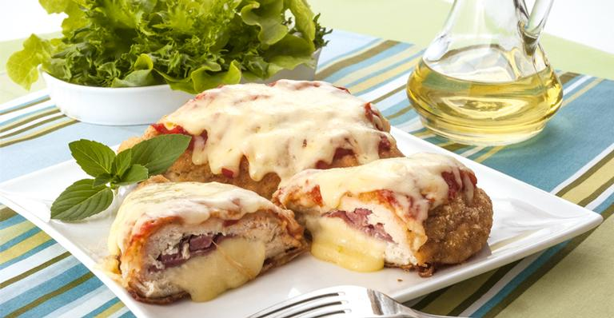

Frango à parmegiana
postado 10 março 2021 Ingredientes
- 8 filés de peito de frango
- 2 dentes de alho
- 2 limões
- sal e lemon pepper à gosto
- 2 ovos
- 2 xícaras de (chá) de farinha de rosca
- 1 lata de molho de tomate
- 200 g de mussarela
- óleo o suficiente para untar
- orégano a gosto
Modo de preparo
- Deixe marinando por 20 minutos o frango com o alho, o sal, lemon pepper e limão.
- Passe o frango já temperado nos ovo batidos e na farinha de rosca.
- Frite o frango empanado.
- Ponha no refratário molho de tomate, o frango, e por cima coloque mussarela e oregáno.
- Leve ao forno para gratinar e sirva em seguida.
Destaques da semana
No café da manhã, corte em fatias e coloque este bolo na torradeira. Humm, quentinho com manteiga é uma perdição. Aprenda a fazer este bolo de banana simples e rápido!
Leia maisCrocante for fora e molhadinho por dentro, este empadão leva: frango, celoba, tomate, milho e requeijão cremoso. Aprenda a fazer este delicioso empadão!
Leia mais